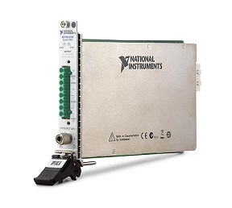

pylab_ml.smu.natinst.pxie41xx.PXIe41xx
- class PXIe41xx(addr=None, channels='0', identify=False, instName=None, runningmode='auto')[source]
Bases:
NatInstInterface to the Power-Measuremet-Unit (SMU) NI PXIe-41xx (e.q. 4138, 4141).

- Date:
May 07, 2026
- Author:
Semi-ATE <info@Semi-ATE.org>
Todo
add sequence_loop_count
The National Instruments PXIe-41xx can source and sink power in all four voltage/current quadrants and measure voltage and current precisely
- This Module supports (=tested) the National Instruments
PXIe-4138
PXIe-4141
- known Bugs:
wenn eine mqtt message von extern empfangen wird, so kann ein aktuelles Artribute set/get unterbrochen werden, und es kann dadurch zu Problemen mit dem aktuellen state geben. z.bsp aperture_time=2, es kommt aber ein voltage von extern (weil gui aufgerufen wird), state war auf uncommited, voltage setzt state auf running aperture_time wird weiter verarbeitet, brauch state aber uncommited ==> setzen von Attribute darf nicht unterbrochen werden…
Source Mode must be configured to Single Point when multiple channels are present in the same session (e.q. PXIe4141) -> Workaround for stair_sweep, which is implemented :
rescue all adjustments
close session (source remain their state)
reopen only one channel
write adjustements to this channel
run stair_sweep
close session
reopen the channels again and write all adjustements to the channels
–> if you know a better solution, please improve the stair_sweep
- some functions of the PXIe41xx are not implemented now,
see: http://nimi-python.readthedocs.io/en/master/nidcpower.html or read the manual http://zone.ni.com/reference/en-XX/help/370736U-01/
self.ch[0].source_delay = 0.01667
self.ch[0].sequence_loop_count = run count x sequence
for generell measurement: http://www.ni.com/de-de/innovations/white-papers/14/top-measurement-considerations-for-modular-source-measure-units-.html
- __init__(addr=None, channels='0', identify=False, instName=None, runningmode='auto')[source]
Initialise.
- Parameters:
addr (string) – name from the PXI-Slot e.q. ‘PXI1Slot3’ or ‘SMU’.
channels (string, optional) – (only 4141). Specifies which output channel(s) to include to this module. Specify multiple channels by using a channel list or a channel range. A channel list is a comma (,) separated sequence of channel names. For example, ‘0,2’ specifies channels 0 and 2.
identify (bool, optional) – Defaults to False.
instName (string, optional) – Instance Name from top.
runningmode (string, optional) – handle state of the instrument automaticall or manual. Defaults to ‘auto’.
- Raises:
InvalidInstrumentConnection – something is wrong with the connection.
Note
For Instrument handling it is much easier to set runningmode = ‘auto’ (default). Otherwise you have to handle commit, initiate and abort by yourselve, and often you will raise an Excepetion by the instrument.
- Examples:
- Initialization
>>> vdd = PXIe41xx(addr=3,instName='vdd') # connect and initialize instrument PXI-4138 or one channel fro PXI-4141 >>> vdd = PXIe41xx(addr=3,channel='0,1',instName='vdd') # connect and initialize instrument PXI-4141 with channel 0,1
- Use instrument as voltage source
>>> vdd.i_clamp = 0.01 # current protection >>> vdd.voltage = 3.3 # set output voltage >>> i = vdd.current # measure (supply) current
- Use instrument as current source
>>> vdd.v_clamp = 5 # voltage protection >>> vdd.current = 0.1 # set output current_range >>> v = vdd.voltage # measure voltage
- detailed example of usage:
common for PXIe4138:
examples/smu/PXIe4138.pycommon for PXIe4141:
examples/smu/PXIe4141.pymeasure loops :
examples/smu/PXIe4141_2.pyloops and stairsweep combined (2x faster as the example before), for PXIe4141/PXIe4138:
examples/smu/PXIe4141_3.pyand an example, how you should not used this module:
examples/smu/PXIe4141_badexample.py
Methods
__init__([addr, channels, identify, ...])Initialise.
abort()Set state from Instrument to uncommitted.
checkstate(value)Compare actual state with value and set it to value if compare false.
clear()Clear error status.
close()Disable all outputs and terminate interface.
Close the session (=inst).
commit()Set state from Instrument to commit.
createattributes(dictionary[, parent, ...])Create attributes or methods from a dictionary.
disable()Set state from Instrument to uncommitted.
List of outstanding errors.
fetch_data(npoints[, measure])find_names() returns list of identifiers strings, lhs of = assignments
get_values([typ])Get response of previous stair_sweep(), choosing result rows from previous request typ.
help()identify([showInstName])Identify message.
init([identify])Optional init for interlock startup after identification.
initiate()Set state from Instrument to running.
List all PXIe devices.
local()Not possible, always remote control.
message([message])Device has no display, message display to logger.info.
mfilter(input)mqtt_add(client, instrument[, liste, qos])Add the instrument to mqtt.
Remove the instrument from mqtt.
off()Switch output off.
on()Switch output on.
plot_smu_data(time[, voltage, current])publish(topic, value)Publish topic as type='cmd' with paylad=value.
publish_get(function_name, value)Publish function_name as type='get' with paylad=value.
publish_set(function_name, value)Publish function_name as type='set' with paylad=value.
reopen_session(channels)Reopen last session with channels.
reset()reset, and all channels set to.
self_cal([force])Perform self calibration if last self calibration is older than 1 day.
Set the instrument settings and intialise some variable.
smu_fetch_settings([record_length, ...])stair_sweep(start, stop[, dstep, stime, ...])Make a stait sweep beetween start and stop.
Attributes
Get driver current.
Get/set current drive autorange.
Set/get current drive range.
Get/set voltage drive autorange.
Get/set voltage drive range.
Get driver Voltage.
Specifiy the measurement aperture time for the channel configuration.
Specifiy the units of the aperture_time property for the channel configuration.
Specifiy the auto-zero method to use on the device.
Set/get channel number if the instrument have more than one channel.
Check compliance from Device.
commandGet/set output current.
Determine the relative weighting of samples in a measurement.
Get/set current measurement autorange.
Set the current clamping (A), will adjust current measurement range.
Set/Get the current range (A), will adjust current clamping.
Get the id from the device.
Return with instname or instname[ch] if it has channels.
interchoicesGet voltage and current together without delay, or set the measure typ.
Set/get the number of measurement to be carried out in a loop.
mqtt_enablemqtt_listGetter for the mqtt_status.
Define behaving after change voltage/curret setting.
Get/set on state (True), for set 1 or 'on' always possible.
Configure the output funkction.
Set/get runningmode.
Perform the device self-test routine and return pass, otherwise raise an exception.
Get/set local or remote sensing of the output voltage.
stair_slope to target or target,slope_time using previous stair_sweep() parameters.
stair_step to target or target, dstep or target, dstep,stime, using previous stair_sweep() parameters.
Set/get state, only set state if necessary.
Set/get delay between steps.
This is the end value if you run a sweep.
Get/set voltage measurement autorange.
Set the voltage clamping (V), will adjust voltage measurement range.
Set the voltage range, will adjust voltage clamping.
Get or set output voltage.
if something wrong with your called methode, than set the result to self.ATTR_ERROR
last set/get attribute name.
last set attribute value.
- ATTR_ERROR
if something wrong with your called methode, than set the result to self.ATTR_ERROR
- property Current
Get driver current.
- Returns:
driver current (in A).
- Return type:
value (float)
- property I_autorange
Get/set current drive autorange.
- property I_range
Set/get current drive range.
- Returns:
val (float)
- Return type:
current drive range (in A).
- class Runningmode(value)
Bases:
EnumPossible Modes for state handling.
- auto = 0
handle commit, uncommit, running automatically
- man = 1
do it by yourselve
- class State(value)
Bases:
EnumPossible states for the instrument.
actual state
send command
new state
Comment
uncommitted state
commit
committed state
uncommitted state
initiate
running state
committed state
modify any property
uncommitted state
laut Beschreibung, ist das wirklich so?? es wird normalerweise immer eine exception ausglöst
running state
abort
uncommitted state
running state
commit
running state
- committed = 1
committed state
- disabled = -1
reset instrument, output switched off
- running = 2
running state
- uncommitted = 0
uncommitted state
- property V_autorange
Get/set voltage drive autorange.
- property V_range
Get/set voltage drive range.
- property Voltage
Get driver Voltage.
- Returns:
driver Voltage (in V).
- Return type:
value(float)
- abort()
Set state from Instrument to uncommitted.
usually handle automatically, if runningmode==’auto’.
- property aperture_time
Specifiy the measurement aperture time for the channel configuration.
Aperture time is specified in the units set by the aperture_time_units property
- property aperture_time_units
Specifiy the units of the aperture_time property for the channel configuration.
SECONDS or POWER_LINE_CYCLES. see: http://nimi-python.readthedocs.io/en/master/nidcpower/class.html#aperture-time-units
- attrLast
last set/get attribute name.
- attrLastvalue
last set attribute value.
- property auto_zero
Specifiy the auto-zero method to use on the device.
OFF, ON or ONCE. see: http://nimi-python.readthedocs.io/en/master/nidcpower/class.html#auto-zero
- property channel
Set/get channel number if the instrument have more than one channel.
- you can also use:
>>> vdd[0].voltage = 5 # set voltage from channel 0 >>> vdd[1].current = 0.1 # set current from channel 1 >>> v = vdd[1].voltage # measure voltage from channel 1
- checkstate(value)[source]
Compare actual state with value and set it to value if compare false.
- Parameters:
value (
NatInst.State) – expected status.- Return type:
None.
- clear()
Clear error status.
- close_session()
Close the session (=inst).
- property cmpl
Check compliance from Device.
- Returns:
value –
False no compliance
True compliance, limit accomplished
- Return type:
bool
- commit()
Set state from Instrument to commit.
usually handle automatically, if runningmode==’auto’.
- createattributes(dictionary, parent=None, child=None, childname='')
Create attributes or methods from a dictionary.
syntax from the dictionary see example in the class documentation.
- Parameters:
dictionary (dict) – {attribute/methode name : (Device command for read/write) , range, call functions}.
- Returns:
None.
- property current
Get/set output current.
If the current is set, the output is switched on immediately (if self.onAfterset == True).
- Parameters:
value (float) – set to current (in A).
- Returns:
current (in A).
- Return type:
value (float)
- property dc_noise_rejection
Determine the relative weighting of samples in a measurement.
NORMAL or SECOND_ORDER see: https://nimi-python.readthedocs.io/en/master/nidcpower/class.html#dc-noise-rejection
- disable()
Set state from Instrument to uncommitted.
usually handle automtically, if runningmode==’auto’.
- error_list()
List of outstanding errors.
- find_names()
find_names() returns list of identifiers strings, lhs of = assignments
- get_values(typ='')[source]
Get response of previous stair_sweep(), choosing result rows from previous request typ.
get info about calculated divergence to target sweep values, for checking ramping time is ok Transfer last requested measurement sweep results
- Parameters:
typ (TYPE, could be 'VITS') – V = Voltage I = current T = time S = status(compliance) The default is ‘’.
- Returns:
numpy array from the values.
- Return type:
TYPE
- property i_autorange
Get/set current measurement autorange.
- property i_clamp
Set the current clamping (A), will adjust current measurement range.
- Current Limit Range and Current Limit are :
i_clamp 0.000001 A (int) / 1 µA = Limit +0.00000001 A to +0.000001 A (int) / +10 nA to +1 µA
i_clamp 0.00001 A (int) / 10 µA = Limit +0.0000001 A to +0.00001 A (int) / +100 nA to +10 µA
i_clamp 0.0001A (int) / 100 µA = Limit +0.000001 A to +0.0001 A (int) / +1 µA to +100 µA
i_clamp 0.001 A (int) / 1 mA = Limit +0.00001 A to +0.001 A (int) / +10 µA to +1 mA
i_clamp 0.01 A (int) / 10 mA = Limit +0.0001 A to +0.01 A (int) / +100 µA to +10 mA
i_clamp 0.1 A (int) / 100 mA = Limit +0.001 A to +0.1 A (int) / +1 mA to +100 mA
i_clamp 1 A (int) / 1 A = Limit +0.01 A to +1 A (int) / +10 mA to +1 A
i_clamp 3 A (int) / 3 A = Limit +0.1 A to +3 A (int) / +100 mA to +3 A
i_clamp 10 A (int) / 10 A = Limit +0.1 A to +10 A pulsing only (int) / +100 mA to +10 A
- property i_range
Set/Get the current range (A), will adjust current clamping.
- Current Value Range and Current Value are :
i_range 0.000001 A (int) / 1 µA = Value ±0.000001 A (int) / ±1 µA
i_range 0.00001 A (int) / 10 µA = Value ±0.00001 A (int) / ±10 µA
i_range 0.0001 A (int) / 100 µA = Value ±0.0001 A (int) / ±100 µA
i_range 0.001 A (int) / 1 mA = Value ±0.001 A (int) / ±1 mA
i_range 0.01 A (int) / 10 mA = Value ±0.01 A (int) / ±10 mA
i_range 0.1 A (int) / 100 mA = Value ±0.1 A (int) / ±100 mA
i_range 3 A (int) / 3 A = Value ±3 A (int) / ±3 A
i_range 10 A (int) / 10 A = Value ±10 A pulsing only (int) / ±10 A
- property id
Get the id from the device.
- identify(showInstName=False)
Identify message.
- init(identify=False)
Optional init for interlock startup after identification.
- initiate()
Set state from Instrument to running.
usually handle automatically, if runningmode==’auto’.
- property instName
Return with instname or instname[ch] if it has channels.
- json = <module 'json' from '/home/runner/miniconda3/envs/test/lib/python3.9/json/__init__.py'>
- list_PXIdevices()[source]
List all PXIe devices.
but it’s not running correcly…. how can we make a list from all devices on PXIe ?
- local()
Not possible, always remote control.
- property measure
Get voltage and current together without delay, or set the measure typ.
- Returns:
mesasured voltage. * float: measured current.
- Return type:
float
Tip
measure is 2x faster as separate voltage and current.
- property measurecnt
Set/get the number of measurement to be carried out in a loop.
TODO: this function is not running yet, it is only a dummy
if the result == None than this function not implemented. The return value for the measurement is calculated togetheer with the mfilter setting.
- message(message=None)
Device has no display, message display to logger.info.
- mqtt_add(client, instrument, liste='#', qos=0)
Add the instrument to mqtt.
calling from base_instrument, after the instrument (device) has been create. Normally you have not to use this function, only base_instrument use it.
- Returns:
None.
- mqtt_disconnect()
Remove the instrument from mqtt.
calling from base_instrument, if the instrument are closing. Normally you have not to use this function, only base_instrument use it.
- Returns:
None.
- property mqtt_status
Getter for the mqtt_status.
- property onAfterset
Define behaving after change voltage/curret setting.
- Args: if set
- value (bool):
True : enable output after voltage/current setting (default).
False : output not switching after voltage/current setting.
- Returns: if get
- value (bool):
True or False.
- property onoff
Get/set on state (True), for set 1 or ‘on’ always possible.
- property output_function
Configure the output funkction.
DC_CURRENT or DC_VOLTAGE
- publish(topic, value)
Publish topic as type=’cmd’ with paylad=value.
- publish_get(function_name, value)
Publish function_name as type=’get’ with paylad=value.
- publish_set(function_name, value)
Publish function_name as type=’set’ with paylad=value.
- reopen_session(channels)
Reopen last session with channels.
- reset()[source]
reset, and all channels set to.
current_limit_autorange=True
voltage_limit_autorange=True
power_line_frequency = 50.0
aperture_time_units=POWER_LINE_CYCLES
aperture_time=2
inst.auto_zero=OFF
dc_noise_rejection=SECOND_ORDER
- property runningmode
Set/get runningmode.
- self_cal(force=True)
Perform self calibration if last self calibration is older than 1 day.
- Parameters:
force (TYPE, optional) – if force==True -> perform self calibration independent from last calibration. The default is True.
- Returns:
None.
gives information about the calibration
- property selftest
Perform the device self-test routine and return pass, otherwise raise an exception.
After selftest the device is in reset state.
- Returns:
result – state from selftest.
- Return type:
bool
- property sense
Get/set local or remote sensing of the output voltage.
LOCAL or ‘REMOTE’
- property stair_slope
stair_slope to target or target,slope_time using previous stair_sweep() parameters.
- property stair_step
stair_step to target or target, dstep or target, dstep,stime, using previous stair_sweep() parameters.
- stair_sweep(start, stop, dstep=None, stime=0, typ='V', stair='Lin', aperture_time=None, wait=True)[source]
Make a stait sweep beetween start and stop.
- Parameters:
start (float) – Start value in volts or amps.
stop (TYPE) – Stop value in volts or amps.
dstep (TYPE, optional) – Delta amplitude for Lin, Points to interpolate for Log, if “None” than take minimum dstep and stime= time for the whole sweep(=rising,falling time). The default is None.
stime (TYPE, optional) – Delay between steps, if dstep=’None’ than stime is the whole time for the sweep (=rising,falling time). The default is 0.
typ (TYPE, optional) – ‘V-’, ‘I-’ = Voltage / Current sourced, ‘-’ changes direction, volts, amps, timestamp are sensed. The default is ‘V’.
stair (TYPE, optional) – (‘Lin’,’Log) = linear or log source. The default is ‘Lin’.
aperture_time (TYPE, optional) –
- Specifies the measurement aperture time for the channel configuration.
Aperture time is specified in the units set by aperture_time_units (default is seconds). more help: http://zone.ni.com/reference/en-XX/help/370736U-01/nidcpowercref/nidcpower_attr_aperture_time/. The default is None.
wait (TYPE, optional) – not implemented yet. The default is True.
- Returns:
original data from the instrument (Voltage, Current, Compliance).
- Return type:
TYPE
- property state
Set/get state, only set state if necessary.
- property stime
Set/get delay between steps.
if dstep=’None’ than stime is the whole time for the sweep (=rising or falling time).
- property sweepto
This is the end value if you run a sweep.
- Return type:
None.
- property v_autorange
Get/set voltage measurement autorange.
True or False
- property v_clamp
Set the voltage clamping (V), will adjust voltage measurement range.
- Voltage Limit Range and Voltage Limit
v_clamp 0.6 V (int) / 600 mV = Limit +0.006 V to +0.6 V (int) / +6 mV to +600 mV
v_clamp 6 V (int) / 6 V = Limit +0.06 V to +6 V (int) / +60 mV to +6 V
v_clamp 60 V (int) / 60 V = Limit +0.6 V to +60 V (int) / +600 mV to +60 V
- property v_range
Set the voltage range, will adjust voltage clamping.
- Voltage Value Range and Voltage Value are:
- PXIe4138:
v_range 0.6 V (int) / Value ±0.6 V
v_range 6 V (int) / Value ±6 V
v_range 60 V (int) / Value ±60 V
- PXIe4141:
v_range 10.0 V (int) / Value ±10 V
- property voltage
Get or set output voltage.
If the voltage is set, the output is switched on immediately (if self.onAfterset == True).
- Parameters:
value (float) – set to voltage (in V).
- Returns:
output voltage (in V).
- Return type:
value (float)